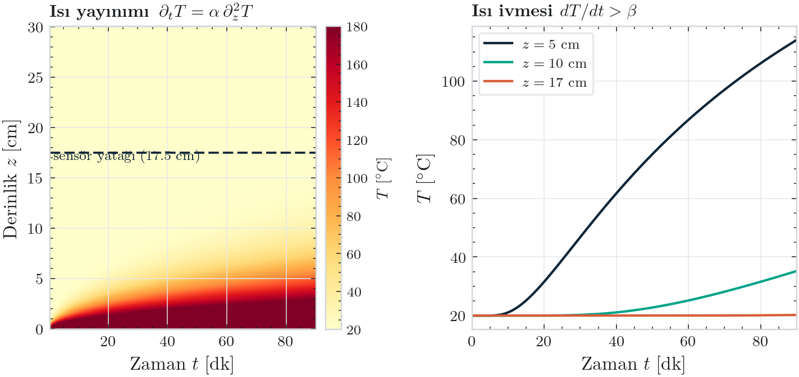

Ormanın biyolojik ağını canlı bir sensöre dönüştürüyoruz.
Saha çalışmalarımızda hep aynı sorunu gördük: Sistemler alevi görmeden harekete geçemiyor. Biz bunu değiştirmek için yola çıktık.
- Toprak altındaki mantar ağı, ısıya hemen elektriksel tepki verir.
- Yerin 15 cm altındaki bu sinyali duman çıkmadan yakalıyoruz.
- Sensör füzyonu ile hangi yönden geldiğini anında bildiriyoruz.

Bugünün sistemleri görüş hattına mahkûm.
Görüntü İşleme Yetersizliği
Yoğun örtü, vadi tabanı ve bulut altında kameralar işlevsiz kalır.
45–90 Dakika Kayıp
Gaz sensörleri rüzgârın dumanı taşımasını bekler, müdahale oldukça gecikir[1].
Ormana Bırakılan Çöp
Pil ve plastik tabanlı elektronikler hızla korozyona uğrayıp atıklaşır.

Trilyonlarca metrelik sensör ağı: Wood Wide Web
Biz yeni bir altyapı kurmuyoruz. Ağaçları birbirine bağlayan miselyum ağının, ısı şokunda ürettiği aksiyon potansiyellerini dinliyoruz.


Doğayla bütünleşen Korozyonsuz Kök-Elektrot
Biyomimetik Üç Katmanlı Tasarım
Orman zemininde plastik kılıflı metal kablolar aylar içinde oksitlenir. Çözümümüz; çelik çekirdek, iletken grafit matris ve sodyum aljinat hidrojelden oluşan paslanmaz ve mantar ağını kendine çeken biyo-uyumlu elektrottur.
- Sodyum Aljinat Hidrojel: Canlı dokuyu simüle eder.
- İletken Grafit Matris: Korozyonu önler, empedansı düşürür.
- 316L Çelik Çekirdek: Fiziksel dayanım ve yeraltı penetrasyonu.

Hipotezi laboratuvar ortamında doğruladık.


Şekil 11: İklim kabini termal şok testleri. Pleurotus ostreatus ağı üzerinde ESP32 ve yüksek çözünürlüklü ADC kullanılarak canlı veri elde edilmiştir.
Ticari bağımsızlık için 5 paket yeterli.

- Birim Paket Kâr Marjı: 200.000 TL
(360k Satış Fiyatı - 160k Üretim/Kurulum) - 18 Aylık Sabit Gider Planı: ≈ 880.000 TL
(AR-GE Sarf Malzeme, IP, Bulut Sunucu, Kira) - Çekirdek Fon İhtiyacı: 1.350.000 TL
(TÜBİTAK 1812 BİGG Desteği ile Karşılanacaktır)
Sonuç: Piyasaya sürülen sadece ilk 5 referans paket satışı ile projemiz kârlılığa geçmekte ve dış yatırıma ihtiyaç duymadan kendini idame ettirebilmektedir.